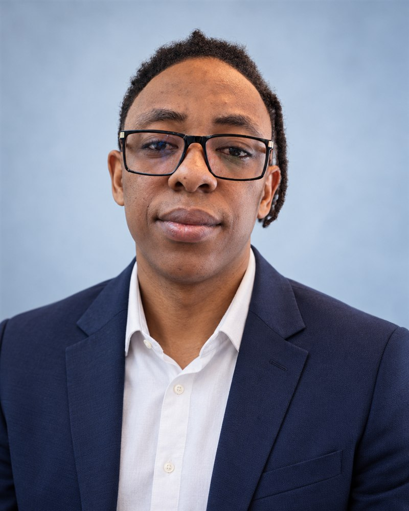

Supervision & observabilité
Instrumenter les applications, suivre les performances et exploiter les signaux de supervision pour comprendre le fonctionnement des services.
Infrastructures · Observabilité · Automatisation
Steve Aimé · Ingénieur IT
Je m’intéresse à ce qui rend une infrastructure fiable : observer son fonctionnement, comprendre ses signaux et automatiser ses opérations.

Je suis Steve Aimé Djieutcheu Djeuha, diplômé en informatique et systèmes. Mon parcours relie les réseaux, les infrastructures IT et la supervision applicative.
Mon expérience DevSecOps chez Infrabel m’a permis de travailler sur l’observabilité avec OpenTelemetry et Elastic APM, ainsi que sur l’automatisation avec Terraform et Ansible. Je m’intéresse à la continuité des services et à l’exploration de l’AIOps pour accompagner les opérations.
Quatre axes pour comprendre mon environnement technique et mes centres d’intérêt professionnels.
Instrumenter les applications, suivre les performances et exploiter les signaux de supervision pour comprendre le fonctionnement des services.
Automatiser les opérations et la gestion des configurations, avec un intérêt pour les déploiements reproductibles et l’orchestration des conteneurs.
Analyser les réseaux, étudier les interconnexions et contribuer à la maintenance des infrastructures de télécommunications.
Un environnement de compétences qui comprend les plateformes de virtualisation et les services cloud, en complément des infrastructures et des réseaux.
Une sélection de travaux réalisés en stage, de l’observabilité applicative aux infrastructures réseau.
Architecture de principe
Contribution à la supervision applicative avec OpenTelemetry et la suite Elastic, pour suivre les performances et accompagner l’analyse des alertes.
Travail sur le monitoring applicatif, les configurations de supervision et le suivi des performances. Cette expérience s’inscrit dans une démarche de maintenance et de continuité des services IT. Le schéma illustre le principe général, sans exposer l’architecture interne.
Étude et mise en œuvre de solutions MPLS pour les interconnexions réseau, avec une contribution à l’analyse et à la maintenance des infrastructures de télécommunications.
Participation à l’étude des solutions d’interconnexion et des infrastructures reliant les datacenters, dans le cadre d’un stage académique à Douala.
Réalisation, dans le cadre d’un stage académique, d’une connexion FTTH entre deux stations de télécommunications.
Contribution à la mise en place de la liaison entre les deux stations. Une expérience de terrain venant compléter mon parcours en réseaux et télécommunications.
Expériences professionnelles
Infrabel
Poste actuelInfrabel · Supervision applicative, observabilité et automatisation.
CAMTEL & TELEINFRA · MPLS et liaison fibre FTTH.
Formation — sélection
Université de Mons
En coursEAFC-Uccle
ENSP Maroua
Une question sur mon parcours, mes réalisations ou une opportunité professionnelle ? Contactez-moi directement.